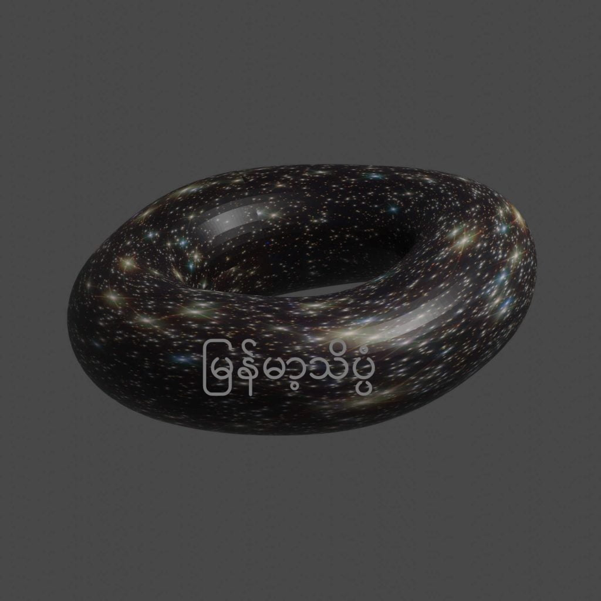

တခါတလေ အရိုးရှင်းဆုံးလို့ ထင်ရတဲ့ မေးခွန်းတွေက အတော် အဖြေရှာရ ခက်တာဗျ။ ဥပမာ အလင်းအလျှင်က တစက္ကန့်ကို ကီလိုမီတာ ၃၀၀,၀၀၀ ဆိုတော့ အမှောင်ထုရဲ့ အလျှင်နှုန်းက ဘယ်လောက်လဲ။ Big Bang ကြီး မတိုင်ခင် ဘာရှိလဲ။
စကြာဝဠာရဲ့အဆုံးနဲ့အစ
အခု စကြာဝဠာ ဘယ်အထဲမှာ ပြန့်ကား နေတာလဲ ဆိုတဲ့ မေးခွန်းကို တိုတိုတုတ်တုတ် ဖြေရမယ် ဆိုရင်တော့ ရူပဗေဒ ပညာရှင် တွေက ဒီမေးခွန်းဟာ အဓိပ္ပါယ် မရှိတဲ့ မေးခွန်း ဖြစ်တယ်လို့ ဖြေကြပါတယ်။ စကြာဝဠာဆိုတာ အကုန်လုံးပဲ၊ ဒါ့ကြောင့် သူ့အပြင်မှာ ဘာမှ မရှိဘူး၊ ဒါ့ကြောင့်မို့လို့ စကြာဝဠာကြီးဟာ ဘယ်အထဲကိုမှ ပြန့်ကားထွက်နေတာ မဟုတ်ဘူး၊ သူ့ဟာသူ ပြန့်ကား ထွက်နေတာလို့ ဖြေကြပါလိမ့်မယ်။စကြာဝဠာကြီးထဲမှာ ရှိနေတဲ့ ဂလက်ဆီ ကြီးတွေကလဲ တခုနဲ့ တခု ဝေးရာကို အရှိန်အဟုန်နဲ့ ပြေးထွက်နေ ကြတာပါ။ ဂလက်ဆီ တခုနဲ့ တခုအကြားက လေဟာနယ် ဖြစ်နေတဲ့ အာကာသ ကြီးကလဲ ဆန့်ထွက်လို့ နေပါတယ်။ စကြာဝဠာရဲ့ အစိတ်အပိုင်း အားလုံးဟာ တစ်ခုနဲ့ တစ်ခု ဝေးသထက် ဝေးလာလို့ နေကြပါတယ်။ စကြာဝဠာမှာ ဗဟိုချက် ဆိုတာ မရှိသလို အနားသတ် ဆိုတာလဲ မရှိပါဘူးတဲ့။ ဒီလို အနားသတ် မရှိတဲ့ အတွက် ဘယ်အထဲကိုမှ ပြန့်ထွက်စရာ အကြောင်း မရှိတော့ ပါဘူး။
ဒါပေမယ့် အနားသတ် မရှိဘူး ဆိုပေမယ့် စကြာဝဠာကြီးက “အနန္တ အကန့်အသတ်မဲ့ (infinite)” အတိုင်းအတာ ရှိတယ်လို့ ဆိုလိုတာလဲ မဟုတ်ပြန်ပါဘူး။ ဒါကို နမူနာ ပြရရင် စကြာဝဠာကြီးကို ရာဘာပူပေါင်း တစ်ခုနဲ့ နမူနာပြု ကြည့်ကြရအောင်ပါ။ စကြာဝဠာကြီးပေါ်က အာကာသနဲ့ ဂလက်ဆီတွေက ပူပေါင်းရဲ့ မျက်နှာပြင်မှာ ရှိနေတဲ့ အမှတ်တွေ ဆိုပါစို့။ ဒီပူပေါင်းကြီးကို လေမှုတ်လိုက်ရင် ပူပေါင်းကြီးက တဖြည်းဖြည်း ပြန့်ကားပြီး ထွက်သွားမှာ ဖြစ်ပါတယ်။ ဒီလို ပြန့်ကား သွားတဲ့အခါ ပူပေါင်းရဲ့ မျက်နှာပြင် ပေါ်က အမှတ်တွေကလဲ တခုနဲ့ တခု ဝေးဝေးပြီး သွားမှာ ဖြစ်ပါတယ်။ ဒါပေမယ့် ဒီပူပေါင်းပေါ်မှာ ရှိနေတဲ့ ပရွက်ဆိတ်လေး တစ်ကောင် အတွက်တော့ အနားစွန်းကို ရောက်မှာ မဟုတ်ပါဘူး။ သူ့အနေနဲ့က ဘယ်ဖက်ကို သွားသွား ဆုံးသွားတယ် ဆိုတာ မရှိပါဘူး။
ဒီပူပေါင်းပေါ်က စကြာဝဠာကြီး အတွက်က အဆုံးအစ ဆိုတာ မရှိသလို အနားသတ် အစွန်းလဲ မရှိပါဘူး။ ဒါပေမယ့် အကန့်အသတ်မဲ့ အနန္တ (“infinite”) တော့ မဟုတ်ပါဘူး။ ပူပေါင်းပေါ်က စကြာဝဠာမှာ အလယ်ဗဟိုမရှိ အဆုံးမှတ် အစမှတ် မရှိသလို အပြင်က စကြာဝဠာမှာလဲ ဗဟိုဆိုတာ မရှိပါဘူး။ ဒီလိုပဲ အဆုံးမှတ် အစမှတ် ဆိုတာလဲ မရှိပါဘူး။ ပူပေါင်းပေါ်က စကြာဝဠာရဲ့ ထုထည်က ကန့်သတ်ချက် ရှိနေသလို အပြင်ပက စကြာဝဠာရဲ့ အတိုင်းအတာ ထုထည်ကလဲ အကန့်အသတ် ရှိနေပါတယ်။
စကြာဝဠာရဲ့ပုံသဏ္ဍာန်ကဘယ်လိုရှိလဲ
စကြာဝဠာကြီးက ပြားနေတယ် ဆိုတဲ့ စကား ကြားဖူးကြမှာပါ။ ကဲ ပြားနေတယ်ပဲ ထားပါစို့။ စာရွက်တရွက်လဲ ပြားနေတာပဲ၊ သူ့မှာ ဘောင်အနားစွန်း ရှိတယ်လေ။ စကြာဝဠာရဲ့ ပမာဏက အကန့်အသတ်ရှိတယ်ဆို တချိန်ချိန်တော့ အနားစွန်းကို ရောက်ရမှာပေါ့။ အထူးသဖြင့် ပြားနေတယ် ဆိုရင်ပေါ့။ဒီပြဿနာကို ရူပဗေဒ ပညာရှင်တွေက စာရွက်နဲ့ပဲ ဥပမာ ပြန်ပေးပြီး ဖြေရှင်းချက် ပေးပါတယ်။ စကြာဝဠာက စာရွက်တရွက် ဆိုပါစို့။ ဒီစာရွက်ကို နားစွန်းနှစ်ခု ထိအောင် လိပ်လိုက်ရအောင်။ ဒါဆို ဆလင်ဒါပုံ ဖြစ်သွားပါလိမ့်မယ်။ ဒီ စကြာဝဠာ စလင်ဒါရဲ့ တနေရာကနေ အာကာသယာဉ် တစီး ထွက်လာမယ်ဆိုရင် ဒီ ဆလင်ဒါပုံ စကြာဝဠာတလျှောက် ပတ်ပြီး မူလနေရာကို တချိန်ချိန်တော့ ပြန်ရောက်လာမှာ ဖြစ်ပါတယ်။
ဒါဆို မေးစရာ ရှိလာတာက ဆလင်ဒါ နားတလျှောက် ပျံမယ် ဆိုရင်ရော အစွန်းမရောက်ဘူးလား လို့ မေးစရာ ရှိပါတယ်။ ဒီအခါတော့ ရူပဗေဒ ပညာရှင်က ဆလင်ဒါရဲ့ ထိပ်နှစ်ခုကို ဆက်ပေးလိုက်ပါတယ်။ ဟုတ်ကဲ့ပါ၊ ဒိုးနတ်နဲ့ တူသွားပါပြီ။ ဒါဆို ဒီ စကြာဝဠာ အပြားကြီးဟာ ဘယ်ဖက်ကို သွားသွား အစွန်းကို ရောက်တော့မှာ မဟုတ်ပါဘူး။

ဒီနေရာမှာ မေးစရာ ပေါ်လာတာက စာရွက်က ပြားပေမယ့် ဒိုးနတ်က မပြားဘူးလေ။ ခုံးနေတယ် မဟုတ်ဖူးလား။ ရူပဗေဒ ဆရာကြီးက “ညစ်” တယ်လို့ ပြောစရာ ပေါ်လာပါတယ်။ ဒီနေရာမှာ ကျွန်တော်တို့ နားလည်တဲ့ “ပြားတယ် (Flat)” ဆိုတာနဲ့ ရူပဗေဒနဲ့ သင်္ချာက နားလည်တဲ့ ပြားတယ် ဆိုတာနဲ့ မတူပါဘူး။ သင်္ချာသဘောအရ ပြားတယ် ဆိုတာက မျဉ်းပြိုင်တွေ အားလုံး အဆုံးအစမရှိ အမြဲတမ်း ပြိုင်နေတာမယ်၊ တြိဂံရဲ့ အတွင်းထောင့် အားလုံး ပေါင်းလဒ်သည် အမြဲ ၁၈၀ ဒီဂရီ ဖြစ်နေမယ်ဆိုရင် “ပြားတယ်” လို့ ယူဆပါတယ်။ အခု ဒိုးနတ်ပုံ စကြာဝဠာ ကြီးထဲမှာ မျဉ်းပြိုင်အားလုံး အမြဲတမ်း ပြိုင်နေကြတာမို့ ပြားပါတယ်တဲ့။
ဒီနေရာမှာ မေးစရာ တခု ပေါ်လာ ပြန်ပါတယ်။ အကယ်လို့သာ ကျွန်တော်တို့ အာကာသယာဉ်နဲ့ တည့်တည့် ခရီးထွက်မယ်ဆို တချိန်ချိန်တော့ မူလ ထွက်ခဲ့တဲ့ နေရာကို ပြန်ရောက်လာမလား ဆိုတာပါပဲ။ ဒါကတော့ အာကာသယာဉ်ရဲ့ သွားနှုန်းဟာ စကြာဝဠာကြီး ပြန့်ကားနှုန်းထက် မြန်မယ်ဆို သီအိုရီ အရတော့ တချိန်ချိန်မှာ မူလ နေရာကို ပြန်ရောက်လာမှာ ဖြစ်ပါတယ်။
အချုပ်ပြောရရင် စကြာဝဠာက ဘယ်ပုံပဲ ရှိနေရှိနေ စကြာဝဠာကြီးဟာ ဘယ်အထဲကိုမှ ပြန့်ကားပြီး ထွက်နေတာ မဟုတ်ပါဘူးတဲ့။ စကြာဝဠာရဲ့ အပြင်ဖက်မှာ ဘာမှ မရှိပါဘူး (မရှိဆို အာကသနဲ့ အချိန်တောင် မရှိပါဘူး)။ ဒါ့ကြောင့် ဘယ်ထဲကိုမှ ပြန့်ကား ထွက်နေတာ မဟုတ်ရပါ ခင်ဗျား။
(မှတ်ချက်။ ဒီဆောင်းပါး ဖတ်ပြီး ဒီည အိပ်မပျော်ရင် မြန်မာ့သိပ္ပံမှ တာဝန်ယူမည် မဟုတ်ပါ ခင်ဗျား)
Reference: If the Universe Is Expanding, What Is It Expanding Into? | Discovery